RoboBoard X3
A programmable controller, designed for small to medium sized robots with strict space requirements or low power applications.
This tiny package features components that are essential for robotic applications: battery input, charging, motor drivers, modules and sensors extensions, orientation sensor, powerful processor, wireless connectivity, software support and more.
To start programming install Arduino and check RoboBoard API section.
Find at:  Totemmaker.net store → RoboBoard X3
Totemmaker.net store → RoboBoard X3
Note: older revision v3.0 has only 2 servo ports. Check Revision changelog.
Feature list
Click orange box to jump to explanation
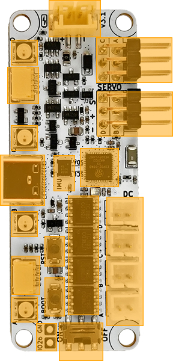
Processor:
• ESP32 chip (ESP32-D0WD)
• Dual-core 240Mhz (Xtensa LX6)
• 320KB SRAM, 8MB flash
• Bluetooth (classic and BLE)
• Wi-Fi
Board features:
• 4 Servo motor ports (3.7 Volt)
• 4 DC motor ports (3.7 Volt)
• 3 GPIO pins + (4 servo SIG)
• 2 LDO regulators
• 4 RGB lights
• IMU sensor (accel and gyro)
• Reset, Boot buttons
• On/Off switch
• Battery input, integrated charger
• Qwiic (STEMMA QT compatible)
• USB-C (power, data, charging)
• GPIO connector
Power:
• USB-C: 5V
• Battery: LiPo, 3.7V, 250 mAh
Dimensions:
• 65 x 25 x 8 mm (L x W x H)
ESP32
RoboBoard is powered by ESP32 - a capable SoC with rich peripherals and wireless connectivity. This combinations makes it perfect for robotic applications where motor driving and wireless control is required.
For a past few years ESP32 is one of the most popular microcontroller among maker community. While its hardware capabilities are no doubt it also comes with vast software support, maintained officially by Espressif company and a help from community. This led to well established Arduino support for ESP32, powering many projects all over the world. Our Arduino support for RoboBoard is based on official core for maintaining compatibility with libraries and examples with addition to well integrated RoboBoard features.
For more ESP32 specific details read ESP32 section.
Board features
Qwiic port
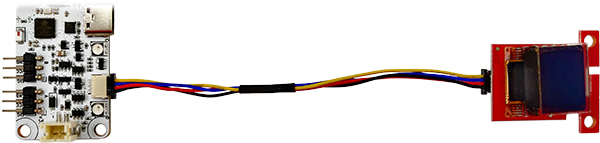
Wires:
• Black = GND
• Red = 3.3V
• Blue = SDA
• Yellow = SCL
Cable: standard "Qwiic cable". Can be found in local electronics store.
Connector: SM04B-SRSS-TB 4-pin
A connection system to attach third-party I2C modules. This allows to choose from many available sensors and other interface devices. Small and sturdy connector eliminates need for soldering and enables plug-and-play style modular systems. Each module comes with it's own Arduino library (supplied by manufacturer).
This port is compatible with SparkFun Qwiic and Adafruit STEMMA QT modules.
For using Qwiic modules with RoboBoard read GPIO / Qwiic section.
3.3V is provided by second LDO converter and can be switched on/off with Board.setEnable3V3(). Read Power circuit section for more details.
IMU sensor
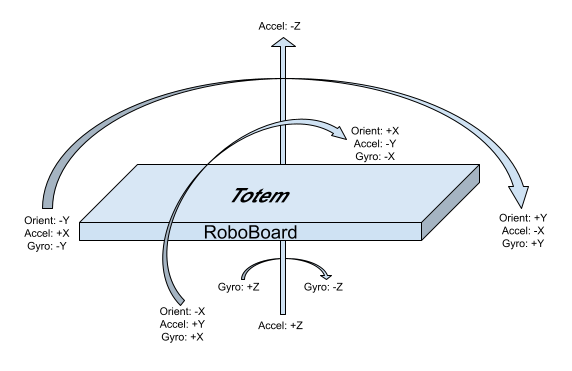
6DOF IMU sensor (3-axis accelerometer and 3-axis gyroscope) allows to detect board movement and orientation. Very useful in many robotic projects. Chip is connected to I2C line (same as Qwiic connector) and can be accessed trough API functions IMU.
#include <Wire.h>
void setup() {
Serial.begin(115200);
Wire.begin();
}
void loop() {
auto result = IMU.read(); // Read sensor measurements
Serial.println(result.getX_G()); // Read unit from "result"
delay(100); // Wait 100ms for next read
}
 RGB lights
RGB lights
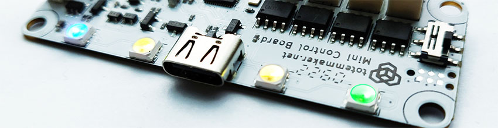
A light bar containing 4 RGB lights for using with multiple purposes. Note: some features must be enabled in Board settings.
Connection indication (Totem App):
- Running animation - no connection
- Steady color - connected to robot
Appearance customization (Totem App):
- Change color - click Settings (when connected) and drag slider to configure robot RGB and connection color.
Battery State Of Charge:
Upon power on - battery charge level will be displayed by playing "loading" animation with specific color:
- - battery is full
- - battery is medium
- - battery is low
- - battery is discharged (blink 3 times)
In case battery is too low - board will power itself off, indicating by LED.
Programming:
Use RGB API to change colors to your likeness or application.
RGB.color(Color::Green); // Color name
RGB.color(0, 0, 125); // Color RGB value
Buttons
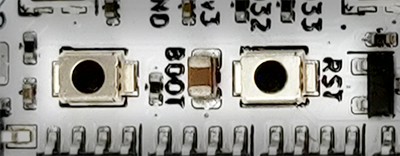
Contains two types of buttons:
RST- Performs hardware processor reset. Used to restart currently running program.BOOT- Enter ESP32 serial bootloader (hold down and pressRESET). Or user button.This is performed automatically during code upload, so pressing button is not required.
Can be used as programmable user button withButtonAPI. Wired to GPIO pin0.
By default this button is inactive and left for user implementation.
void setup() { }
void loop() {
if (Button.wasPressed()) {
RGB.off();
}
else if (Button.wasReleased()) {
RGB.on();
}
}
GPIO
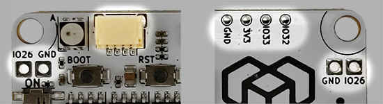
Board contains in total 7 programmable GPIO pins:
- IO26 - trough hole pin (requires soldering)
- IO32, IO33 - left (yellow) connector and back side of the board
- SIGA, SIGB, SIGC, SIGD - servo control pins (S) (when motor is not used)
Yellow connector has multiple uses:
- Connect I2C modules (Qwiic). Mapped to Arduino
Wire1object. - Connect jumper cable wire to access
3V3,GND,IO32,IO33pins.
3V3 is powered by second LDO converter and can be switched on/off with Board.setEnable3V3(). Read Power circuit section for more details.
For more information read GPIO / Qwiic section.
void setup() {
pinMode(IO32, OUTPUT); // Configure pin to output
pinMode(IO33, INPUT); // Configure pin to input
digitalWrite(IO32, HIGH); // Set pin state
int state = digitalRead(IO33); // Read pin state
}
void loop() { }
Motor drivers
Integrated drivers allows to connect motors directly to the board, eliminating the need for an external modules. All control functions are built into RoboBoard API DC, Servo and includes some more advanced features:
DC- control % of power, electric braking, audible tone generation, acceleration and deceleration control, power limiter, decay mode, configurable frequency, spin direction invert.Servo- position, angle, pulse control, timed sequences, configurable pulse range, configurable period, trimming, spin direction invert.
Servo motor ports
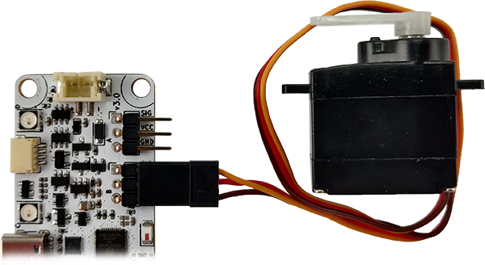
Servo wire colors:
• Orange = Signal (PWM)
• Red = VCC
• Brown = GND
Connector: 0.1″ (2.54 mm) male pin header
Individual (SIG, VCC, GND pin) headers for connecting standard (3 wire) servo motors and other electronics. Ports are marked with letters A, B, C, D for controlling up to 4 motors.
VCC pin is connected to the battery and voltage is dependent on State Of Charge (2.8-4.2V).
By default, API is configured for 180 degree servo motors, with pulse duration between 500μs-2500μs and period of 20ms (50Hz). These parameters can be customized.
For more information read Servo section.
DC motor ports
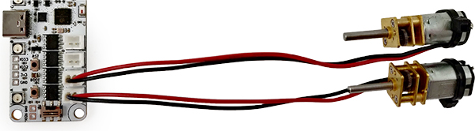
Connector: JST-PH 2-pin
Connectors for 3-6V brushed DC motors. Ports are marked with letters A, B, C, D for controlling up to 4 motors.
Power comes straight from the battery (trough H-bridge motor driver) and peak voltage is dependent on State Of Charge (2.8-4.2V).
Motor power is controller using 20kHz PWM signal. This parameter can be customized.
For more information read DC section.
Note: motor wire colors (red, black) does not indicate polarity (+, -). Swapping wires only changes spin direction.
Power circuit
Board contains built-in electronics for power distribution and control. It takes care of battery charging and provides power for all the components:
BATT(2 Amps) - used byDC motor ports,Servo motor VCC. Vary between 2.8-5 V3.3V main(0.8 Amp) - used byESP32,IMU,RGB lights3.3V periph(0.8 Amp) - used byGPIO 3V3,Qwiic port
Board contains separate 3.3V LDO voltage regulators for ESP32 and other peripherals. 3.3V periph one can be turned on/off with function Board.setEnable3V3() for power saving applications, conveniently disabling all attached Qwiic modules.
Charging
Battery charging circuit activates once USB-C cable is plugged in and continues until battery is full. It even works if power switch is set to OFF position. Any USB power source (computer, phone charger) can be used, providing 0.5A or more current.
If charging mode Board.setChargingMode(true) is enabled - processor enters shutdown mode once USB-C cable is plugged in. It also displays charging process by RGB indication:
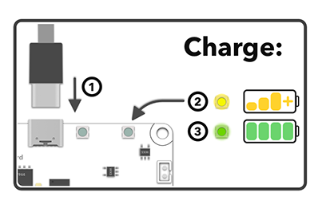
- Plug-in USB-C cable ①
- will blink while charging ②
- will light up when finished ③
Charging process is stopped once battery is full and does not overcharge it.
USB-C input
RoboBoard X3 USB-C 5V input is used for multiple purposes once it's plugged in:
- Board will power on, ignoring position of power switch.
- Battery connected to Battery input will start charging (until it's full).
- PC discovers a serial port device, used for Serial Monitor and Arduino firmware upload.
BATTpower rail overrides battery and becomes 5V (sourced from USB).
DC motor and Servo VCC pins will output 5V.
Keep in mind that PC USB port provides only 0.5 Amps and it's not enough for powering motors. For powering board from USB-C only (without a battery) - use devices that provides more than 0.5A current (e.g. power banks and phone chargers).
Serial converter: CH340C
Connector: USB-C (Type-C)
Battery input
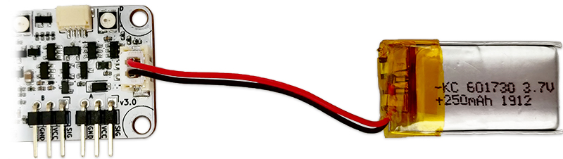
Battery input for 1S rechargeable Lithium battery to supply power to the board. When connected it powers BATT rail. Voltage may vary between 2.8-4.2 V, depending on battery State Of Charge.
Input voltage: 2.8-4.2 Volts
Battery type: 1S 3.7V Lithium (rechargeable) or 18650 cell. Under-voltage protection required
Connector: JST-PH 2-pin
 Important notices:
Important notices:
- Does not feature low voltage protection!
Battery must contain its own under voltage protection circuit. - Does not feature reverse voltage protection!
Make sure polarity ( + - ) is correct before plugging battery in. - Do not connect other power sources (or different battery types)!
May be damaged when USB-C cable is plugged in and charging starts.
Recommended to use only supplied battery: 1S LiPo, 3.7V, 250mAh battery
Or use USB-C port for power if battery is not required.
On/Off switch
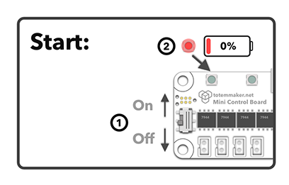
Used to turn X3 board power on/off without a need to disconnect the battery. Push switch ① up or down to toggle power.
Upon power on - battery charge level (if enabled) will be displayed. "Loading" animation will be played with specific color ②:
- - battery is full
- - battery is medium
- - battery is low
- - battery is discharged (blink 3 times)
Setting to OFF position shuts down all power rails (BATT, 3.3V main, 3.3V periph).
This switch is overridden (always ON) if USB-C cable is plugged in.
Schematics
Mechanical drawing (dimensions):

RoboBoard X3 v3.0 drawing.png
RoboBoard X3 v3.1 drawing.png
Schematic:
RoboBoard X3 v3.0 schematic.pdf
RoboBoard X3 v3.1 schematic.pdf
Revision changelog
We are always looking to improve our products. Any physical change (components, layout) is indicated with board revision number (printed on top). Each revision may have different features or functionality.
v3.1
Manufactured from 2024-Q1.
- Added 2 servo ports (total 4)
- Added additional Qwiic connector in place of GPIO
- Added stronger LDO regulators (0.8 Amp)
- Added RGB strip extension pins
- Qwiic won't be powered in charging mode
- Easier to press buttons
- RGB connected to MCU LDO (always powered)
- Silkscreen changes
v3.0
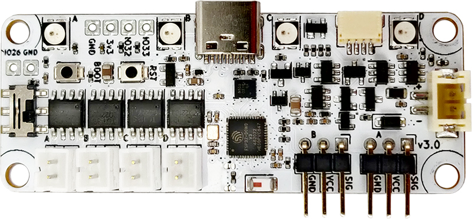
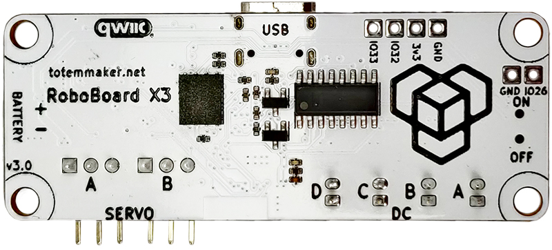
Manufactured from 2023-Q2. Replaces discontinued Mini Control Board.
- Renamed to "RoboBoard X3"
- Added Arduino programming
- Added IMU sensor
- Added Qwiic port
- Added Reset and Boot buttons
- Added GPIO pins
- Added battery current measurement
- Backwards compatible with Mini Control Board
For previous revisions check Mini Control Board revisions.